RMS Mix® - iOS
RMS Mix® is designed specifically for ease of use. The interface is streamlined to give you the simplest method of playing your show, while still allowing for more complex editing if you have the need. (Please note that editing a show requires the use of either Sinfonia® or RMS Coach® software.)
By offering the full power of RMS Mix® in a portable app, the mobile version of RMS Mix® allows you easily take full tracks for your shows wherever you go!
Trial vs. Full version
The trial version is a fully featured application that allows you to experiment with how RMS Mix® works. By default, the trial version of RMS Mix® (mobile) comes with the overture from "Carmen" pre-loaded, so you can experiment with the program without the need to load a specific show.
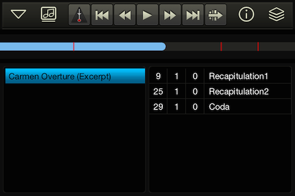
The full version of RMS Mix® is only available to individuals and organizations that have acquired the license for a specific show through the appropriate licensing organization (MTI, R&H, etc). In order to purchase the unlock code for the full version, you will need to license the production through the licensing organization. The license will run for a particular length of time, depending upon the arrangement you have made with the licensing organization. At the end of your license, RMS Mix® will notify you that your license has expired.
Note: there is no limit to the time you can use RMS Mix® before your performances. So provided you have a valid performance license, you could rehearse with RMS Mix® for as long as you are likely to need it. A few weeks, a month, a year – it's up to you.
Purchasing the Full Version
Use of the full version of RMS Mix® (mobile) is included with purchase of the desktop version. You must install RMS Mix® (desktop) in order to unlock RMS Mix® (moblie). For instructions on purchasing, please click here.
Authentication
Once you have received your unlock code, you can authenticate the application. To do so, you need to enter your production details into the application. First, tap on the icon with music notes along the top of the window.
This takes you into the show management window of RMS Mix®. Now click on the '+' icon in the upper right.
You will now be at a screen where you can enter the specific information for your production. Please note! You must already have purchased the program to proceed further!
Enter your information: Name, email, import type (Coach®, Sinfonia®, or Mix®), your organization name and your order number.
Now tap on the lock icon in the upper right.
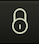
If your information was entered correctly, you will be presented with the following screen:
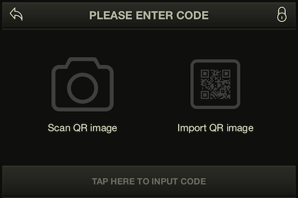
There are two ways to authenticate: by using a QR code or by inputting the code manually. Please note! We highly recommend the QR code method of authentication!
In the email that you received from RMS when you purchased the program, there will be an image attached with the unique QR code for your production. You can scan this code by using the camera on your mobile device, if you have one.
Simply open up the image on a computer, and then in RMS Mix® (mobile), tap on "Scan QR image". This will open up the camera on your mobile device. Point the camera at the QR image, fitting it within the guidelines. The application will automatically capture the QR code and unlock for you.
As an alternative, you can save the image to your device and read it from there. To do this, tap on "Import QR image" and the photos saved to your device will pop up. Select the image with the QR code and the program will unlock.
The other way to unlock is by inputting the code directly. To do this, tap on the bottom of the screen and you can paste the code that you have copied from the email sent to you.
If you have entered the correct code, then you will receive a confirmation dialog box. You now have full access to RMS Mix®!
Expiration of License
The license for a particular show is time based. If you attempt to launch RMS Mix® after this period, you will be notified of this with a dialogue box.
If you wish to extend the length of the license, or feel that there is a mistake, then please call us at 212-620-0774 and we will be happy to assist you.
Show Management
By tapping on the music note icon you will enter the show management screen
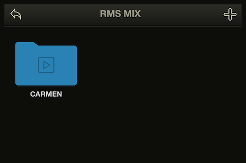
This lets you switch between different show exports you have saved on your device. Simply enter the folder corresponding to your booking number, and you can select which show to load.
If you would like to delete a show folder, tap and hold on the folder icon and then tap on the "x" icon that appears. Note that the default show "Carmen" can not be deleted.
If you would like to delete a showfile within the folder, navigate into the folder and swipe left on the name of the show. A "remove" button will appear.
Loading from RMS Coach® and Sinfonia®
To download show data onto your device that you have exported using either RMS Coach® or Sinfonia®, tap on the "+" icon in the upper right.
On the production details screen, make sure that the "import type" is set to the correct selection for your show. There are two options:
RMS Coach®
Selecting this will load a version of your show that you have made edits to with RMS Coach®. On the production details screen you will need to input your order number (starting with "CCH") that you were given when you acquired your RMS Coach® license.
For instructions on how to export show within RMS Coach® for use in RMS Mix®, please see the relevant section in the RMS Coach® manual.
Sinfonia®
Selecting this will load a version of your show that you have made edits to with Sinfonia®. On the production details screen you will need to input your order number (starting with "SNF") that you were given when you acquired your Sinfonia® license.
For instructions on how to export show data within Sinfonia® for use in RMS Mix®, please see the relevant section in the Sinfonia® manual.
Once you have entered your order number, tap on the cloud icon in the upper right.
On the next screen, you will see a list of available exports associated with your order number. Simply tap on the name of your desired export and the show will load onto your device. Please note that full show exports can be quite large, so downloading may take awhile!
If you get an error screen stating that no content is found, please check that you have entered the correct import type and order number.
There is also a catalogue of pre-programmed "by the book" commercial titles available. For more information, please contact Realtime Music Solutions at (212) 620-0774 or by going to our Contact page.
Interface
There are 3 main screens for RMS Mix® (mobile). To switch between them, either tap on the arrow icon in the upper left to select a specific screen, or tap on the stack icon in the upper right to cycle through screens.
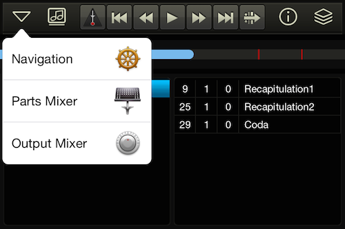
Navigation Screen
The navigation screen is broken into a few subsections, allowing you quick and easy access to your entire show with just a few taps.
Song List
On the left is the list of all the songs in your show, in performance order. You can select specific songs by tapping on the title.
Marker List
On the right side of the navigation window is a list of markers for the currently selected song. By tapping on a marker, you will immediately jump to that part of the song. You can also see the approximate placement of markers within a song as red lines within the timeline.
Tip - you can jump to a marker while the song is already playing, in real time. Use this functionality to handle events like a "jump cut", or for a situation where a singer has missed an entrance and you need to re-start the current section.
Customizing the marker list
By default, markers are pre-programmed for all RMS Mix® shows. However, if you have a license for RMS Coach® or Sinfonia®, you can use either of those programs to modify and create your own markers for the show. For more information please see the relevant sections in either of the RMS Coach® or Sinfonia® manuals.
Note that for repeated sections of music, RMS Mix® will append a suffix to any markers contained within. For example, a marker named "Vocal" inside a section of music that plays 3 times will be called "Vocal.1", "Vocal.2" and "Vocal.3" respectively.
Transport
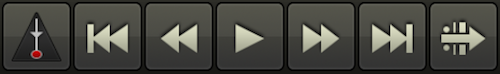
The transport bar is found along the top. From left to right, the buttons have the following functionality:
- rewind to beginning of song / previous song
- rewind by one measure
- play
- stop
- fast forward by one measure
- fast forward to next song
- exit vamp
Vamping
RMS Mix® has built in capabilities to handle vamping within songs. Whenever RMS Mix® comes across a section of a song pre-designated as a vamp, the "Exit vamp" button will highlight like this:

This tells you that RMS Mix® is now within a vamp, and will keep repeating that section of music indefinitely until you press the "exit vamp" button. Once pressed, the program will finish its current playthrough of the vamp and proceed to the next section of music.
If you would like a vamp to be programmed to play a specific number of times on every playthrough, simply tap-and-hold on the vamp icon when it is lit up for that particular vamp. Select the number of times you would like it to play and Mix® will use that for all future playthroughs.
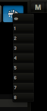
To return the vamp to default behavior, select the infinity symbol at the top of the list.
Info icon
Tapping on the "i" icon will temporarily bring up information on the current song, including name, and playback location.
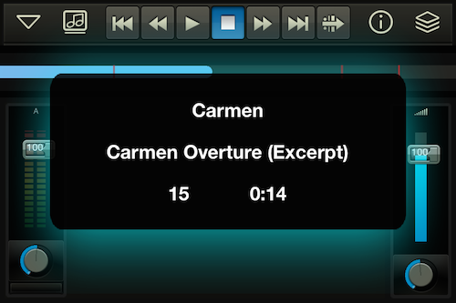
Parts Mixer
The parts mixer is the second major screen for RMS Mix® (mobile). In it you will find channel strips for predefined groups of instruments for your current show. A standard parts mixer might include the following families: Reeds, Brass, High Strings, Low Strings, Percussion, Keyboards, Guitar, Other.
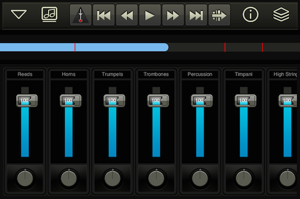
This allows you to easily adjust the overall mix of your show without needing to micro-manage each individual instrument.
The main slider controls the overall volume of that grouping. Below that is a knob and text box for panning left/right.
Customizing instrument groupings
RMS Mix® comes with pre-programmed instrument groupings for each show, but if you have a license for Sinfonia®, you can specify your own instrument groupings. For more information, please see the relevant section within the Sinfonia® manual.
Output Mixer
The third major screen for RMS Mix® (mobile) is the Output Mixer. This gives you control for the overall output level of the application, as well as reverb.
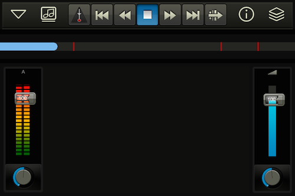
The master fader on the right control the overall sound output level of RMS Mix®. Please note that this is independent of your device's volume controls.
Reverb settings
By double tapping on the knob icons on the bottom of each strip, you can enter a screen which allows for fine control of the settings.
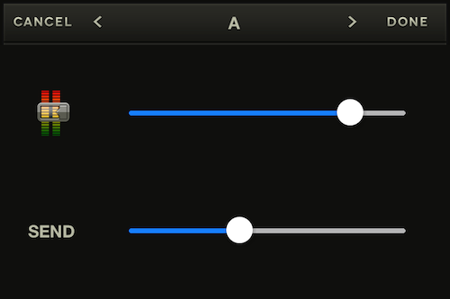
The controls for the channel strip correspond to overall volume for that channel, as well as reverb "send".
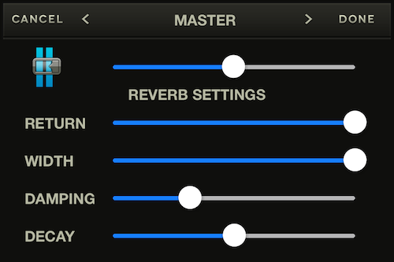
The master strip settings allow you to control the overall level for the application, as well as the amount of reverb "return" and settings to adjust the color of the reverb to your specific taste.